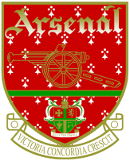
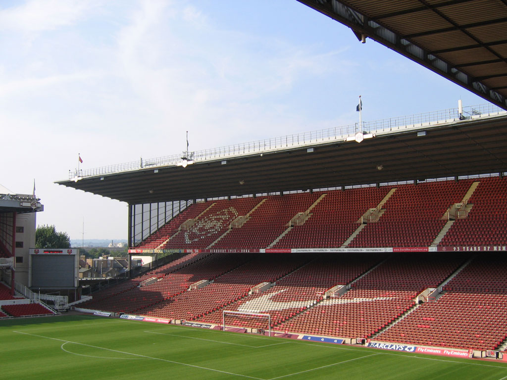
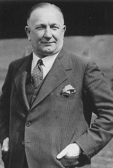
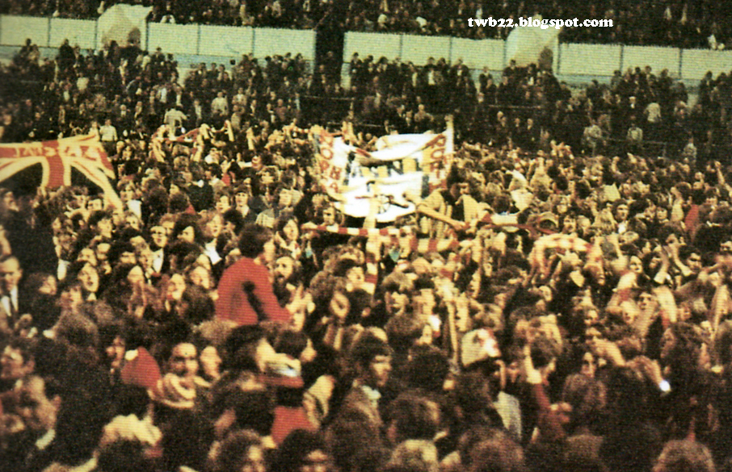
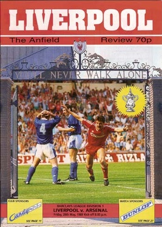
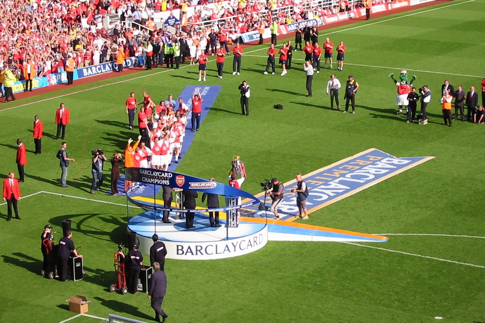
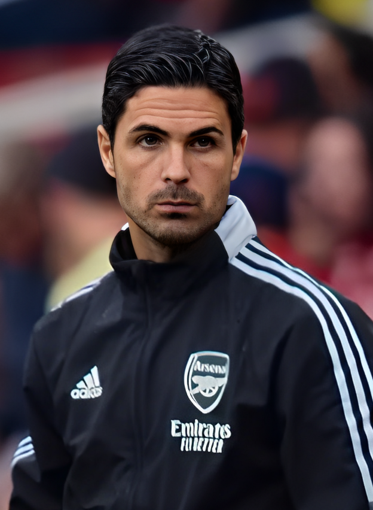

Povijest nogometnog kluba Arsenal
Arsenal Football Club, jedan je od najpoznatijih i najuspješnijih engleskih nogometnih klubova. Osnovan je 1886. godine u jugoistočnom Londonu, u četvrti Woolwich, pod imenom Dial Square, koje je ubrzo promijenjeno u Royal Arsenal, a kasnije u Woolwich Arsenal. Klub su osnovali radnici iz tvornice oružja, što objašnjava naziv i simboliku kluba – top u klupskom grbu.
Rani dani i preseljenje u sjeverni London
Početkom 20. stoljeća, klub se suočio s financijskim poteškoćama, što je dovelo do preseljenja 1913. godine u Highbury, u sjevernom Londonu. Tada klub postaje poznat jednostavno kao Arsenal, a ulaskom u Prvu ligu 1919. godine počinje uspon prema vrhu engleskog nogometa.
Zlatna era pod Herbertom Chapmanom
Pravi procvat Arsenal doživljava 1930-ih godina pod vodstvom menadžera Herberta Chapmana, koji je klub transformirao taktički i organizacijski. Uveo je inovacije poput brojeva na dresovima i WM formacije, a Arsenal je u tom razdoblju osvojio više naslova Prvaka Engleske i FA kupova, postavši dominantna sila u engleskom nogometu.
Poslijeratno razdoblje i uspon u 70-ima
Nakon Drugog svjetskog rata, klub je nastavio s promjenjivim uspjehom. Vrhunac tog razdoblja dolazi 1971. godine, kada Arsenal osvaja svoj prvi "Double" – osvajanje Prvenstva i FA kupa u istoj sezoni.
George Graham i obrambena čvrstoća
Krajem 80-ih i početkom 90-ih, pod vodstvom Georgea Grahama, Arsenal postaje poznat po snažnoj obrani i taktičkoj disciplini. Osvojeni su brojni trofeji, uključujući ligu 1989. i 1991., te Kup pobjednika kupova 1994.
Arsène Wenger i moderno doba
Dolazak francuskog menadžera Arsènea Wengera 1996. godine označava novu eru. Wenger unosi moderan, tehnički nogomet, zdrav način života i disciplinu, što rezultira velikim uspjesima. Osvojena su tri naslova Prvaka, uključujući "Invincibles" sezonu 2003/04, kada Arsenal nije izgubio nijednu utakmicu u ligi – rijetkost u povijesti nogometa.
Novi stadion i tranzicija
Godine 2006. klub se seli s legendarnog Highburyja na moderni Emirates Stadium, što je donijelo financijsku stabilnost, ali i izazove u natjecateljskom smislu. Iako su trofeji bili rijetki u prvoj polovici 2010-ih, Wenger je nastavio graditi momčad oko mladih talenata i atraktivne igre.

Post-Wenger era i novi izazovi
Nakon Wengerova odlaska 2018., klub prolazi kroz fazu tranzicije s nekoliko različitih trenera, uključujući Unai Emeryja i sadašnjeg trenera Mikela Artetu, koji je bivši Arsenalov kapetan. Pod njegovim vodstvom klub je osvojio FA Cup 2020. i nastavlja razvijati mladu, ambicioznu momčad s ciljem povratka na vrh engleskog i europskog nogometa.
